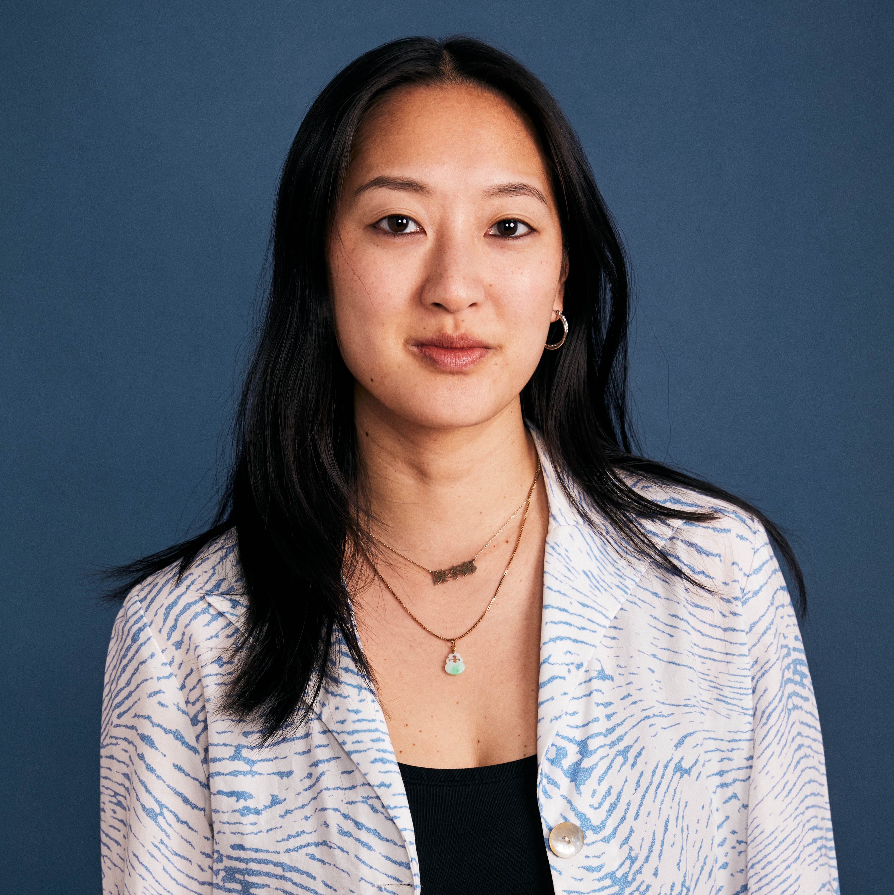

I work at the intersection of experience design, product management and business strategy, turning ambiguous problems into products people use and businesses need.
Over eight years I've worked across healthcare, finance, retail and pharma, from taking a fertility app from whiteboard sketch to live MVP to shaping strategy for brands like Microsoft and Ally.
My favorite part is the translation: digging into research and data until the insight and the path forward are clear, then shaping the strategy until it sticks. I like getting hands-on, whether that's in Figma or a quick AI prototype that lets me test every iteration.
At Anomaly, I spent four years co-chairing Cha Collective, our AAPI employee resource group. We planned events that brought our members together and raised awareness across the agency, including a Night Market that drew the highest attendance of any ERG event at the company.